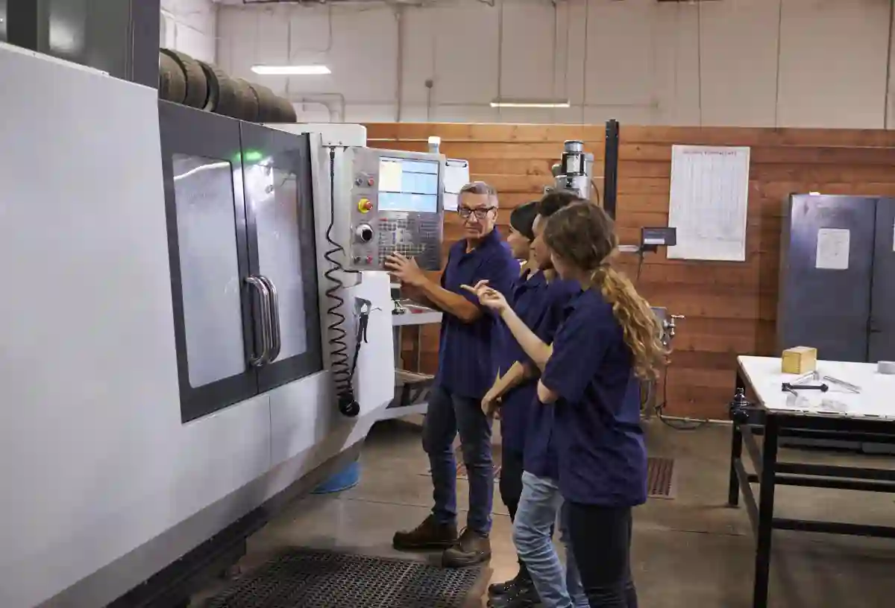
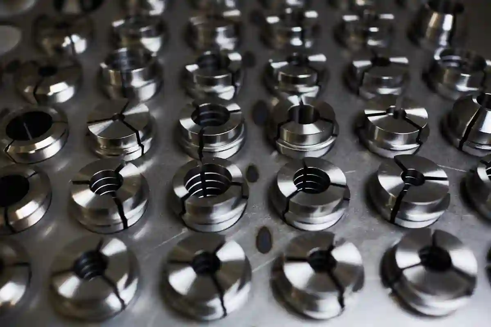
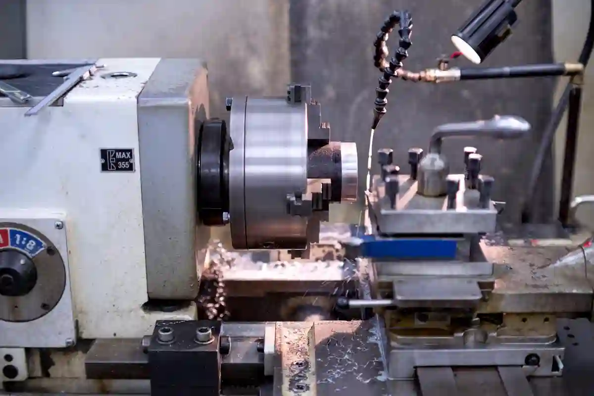
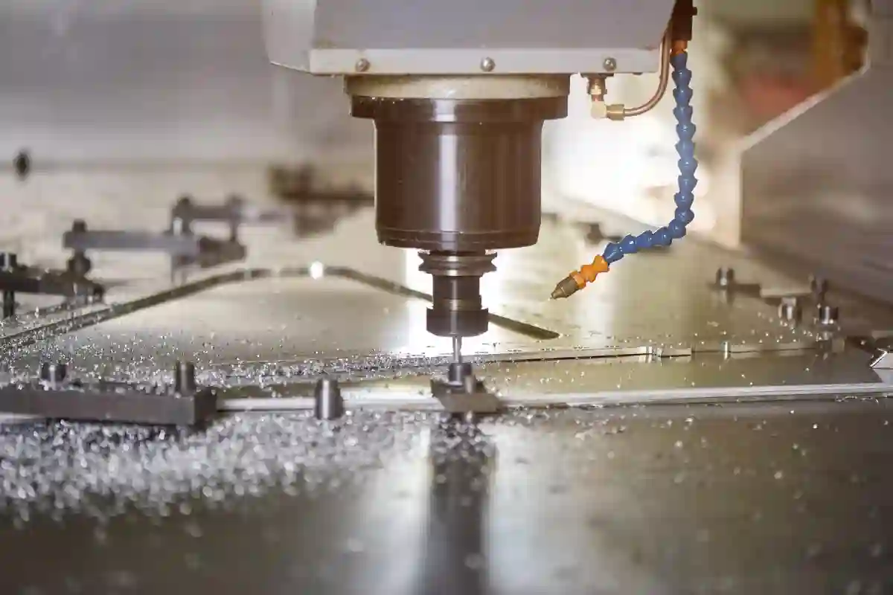

CNC İmalat Fiyatları Neye Göre Belirlenir? – Detaylı Rehber
CNC tabanlı üretim süreçlerinde fiyatlandırma, yalnızca “parça başı süre” veya “makine saati” gibi basit metriklerle açıklanamaz. CNC imalat fiyatları, teknik resmin detay seviyesinden kullanılan malzemeye, talaş kaldırma oranından üretim adedine kadar çok sayıda değişkenin birlikte değerlendirilmesiyle ortaya çıkar. Bu nedenle aynı ölçülere sahip iki parça, farklı üretim senaryolarında tamamen farklı maliyetlerle karşılaşabilir.
Sanayide sıkça yapılan hata, CNC üretimin “standart birim fiyatı” olduğu varsayımıdır. Oysa cnc parça üretim maliyeti, her proje için yeniden hesaplanan dinamik bir bütçeleme sürecidir. Bu hesaplama; mühendislik hazırlığı, işleme stratejisi, takım seçimi ve kalite kontrol gereksinimleriyle doğrudan ilişkilidir. Özellikle talaşlı imalat fiyatları, parça geometrisi karmaşıklaştıkça doğrusal olmayan şekilde artış gösterebilir.
Bu rehberde; fiyatlandırmanın arka planındaki teknik kriterleri, cnc işleme fiyat hesaplama mantığını ve cnc üretim maliyet analizi sürecini net ve anlaşılır bir dille ele alacağız. Amacımız, teklifleri yalnızca “ucuz” veya “pahalı” olarak değil, teknik olarak doğru ve sürdürülebilir bir bakış açısıyla değerlendirebilmeni sağlamak.
CNC İmalatta Fiyatlandırma Mantığı Nasıl Çalışır?
CNC imalat süreçlerinde fiyat, tek bir parametreye bağlı değildir; aksine birbirini tetikleyen çok katmanlı bir maliyet zinciri söz konusudur. Bu zincirin ilk halkası, parçanın üretilebilirliğidir. Teknik resimde belirtilen toleranslar, yüzey kalitesi ve ölçü hassasiyeti, doğrudan işleme süresini ve dolayısıyla maliyeti belirler.
Parça Tasarımı ve Teknik Resim Detaylarının Etkisi
Bir parçanın geometrik yapısı ne kadar karmaşıksa, cnc torna freze fiyatları da o ölçüde yükselir. Derin cepler, ince cidarlar veya çok eksenli işlem gerektiren yüzeyler; özel takım, düşük ilerleme ve daha uzun çevrim süresi anlamına gelir. Bu durum, cnc işleme fiyat hesaplama sürecinde en kritik faktörlerden biridir.
Teknik resimdeki ölçü toleransları da fiyat üzerinde belirleyicidir. ±0,01 mm gibi dar toleranslar, proses içi ölçüm ve ek kalite kontrol adımlarını zorunlu kılar. Bu da doğrudan cnc üretim maliyet analizi içerisinde ek işçilik ve zaman maliyeti olarak yer alır.
İşleme Süresi ve Makine Zamanı
CNC tezgâhlarında en pahalı kaynak, makinenin kendisidir. Dakika bazında hesaplanan makine zamanı; programlama, bağlama, işleme ve parça söküm sürelerini kapsar. Parça ne kadar uzun süre tezgâhta kalırsa, cnc imalat fiyatları da o kadar yükselir.
Bu nedenle profesyonel üreticiler, aynı parçayı farklı işleme stratejileriyle değerlendirerek en optimum çevrim süresini hedefler. Burada amaç yalnızca hızlı üretim değil, takım ömrünü ve yüzey kalitesini de koruyarak maliyeti dengelemektir.
Malzeme Seçimi CNC İmalat Fiyatlarını Nasıl Etkiler?

CNC tabanlı üretimde fiyatın belirlenmesinde en kritik değişkenlerden biri malzemedir. Çünkü seçilen hammadde yalnızca satın alma maliyetini değil; işlenebilirlik, takım aşınması, çevrim süresi ve kalite kontrol gereksinimlerini de doğrudan etkiler. Bu nedenle cnc imalat fiyatları, malzeme türüne göre ciddi farklılıklar gösterebilir.
Birçok alıcı, yalnızca kilogram fiyatına odaklanarak karar verir. Oysa cnc parça üretim maliyeti, malzemenin tezgâhta nasıl davrandığıyla doğrudan ilişkilidir. Aynı ölçülere sahip iki parça, farklı malzemeler kullanıldığında bambaşka üretim süreleri ve maliyet kalemleri ortaya çıkarabilir.
Alüminyum, Çelik ve Paslanmaz Çelik Arasındaki Farklar
Alüminyum alaşımlar, CNC imalatta en sık tercih edilen malzemelerden biridir. Bunun temel nedeni, yüksek işlenebilirlik ve düşük takım aşınmasıdır. Bu durum, daha kısa çevrim süreleri ve daha stabil proses anlamına gelir. Dolayısıyla cnc işleme fiyat hesaplama yapılırken alüminyum parçalar genellikle daha öngörülebilir maliyetlerle tekliflendirilir.
Karbon çelikler ve alaşımlı çelikler ise daha yüksek kesme kuvveti gerektirir. Bu durum ilerleme hızlarını düşürür, takım ömrünü kısaltır ve makine üzerinde daha fazla yük oluşturur. Sonuç olarak talaşlı imalat fiyatları, çelik bazlı parçalarda doğal olarak artış gösterir.
Paslanmaz çelikler ise ayrı bir değerlendirme gerektirir. Isı iletkenliği düşük ve yapışma eğilimi yüksek olan bu malzemeler, işleme sırasında özel takım geometrileri ve düşük kesme parametreleri gerektirir. Bu da cnc torna freze fiyatları üzerinde doğrudan yukarı yönlü bir baskı oluşturur.
Sertlik, Talaş Kırılması ve Takım Aşınması
Malzemenin sertliği arttıkça, talaşın kontrolü zorlaşır. Özellikle uzun ve kırılmayan talaş oluşumu, üretim sırasında duruşlara ve manuel müdahalelere neden olabilir. Bu durum yalnızca zaman kaybı yaratmaz; aynı zamanda proses güvenilirliğini de düşürür.
Takım aşınması ise cnc üretim maliyet analizi içinde sıklıkla göz ardı edilen ancak toplam maliyeti ciddi şekilde etkileyen bir unsurdur. Sert ve aşındırıcı malzemelerde kullanılan kesici takımlar daha sık değiştirilir. Bu da hem sarf malzeme maliyetini hem de duruş sürelerini artırır.
Profesyonel üretim altyapısına sahip firmalar, bu tür malzemeler için özel kaplamalı takımlar ve optimize edilmiş kesme stratejileri kullanarak maliyeti dengelemeye çalışır. Ancak bu optimizasyonun da bir mühendislik ve know-how maliyeti vardır.
Talaş Kaldırma Oranı ve Fire Maliyeti
Bir CNC parçasının nihai maliyeti, yalnızca işlenen ölçülerle değil; başlangıç malzemesiyle bitmiş ürün arasındaki farkla da ilgilidir. Başka bir deyişle, ne kadar çok talaş kaldırılıyorsa, cnc imalat fiyatları o ölçüde artma eğilimi gösterir.
Ham Malzeme – Bitmiş Parça Dengesi
Özellikle dövme veya haddelenmiş stoktan üretilen parçalarda, başlangıç kesiti ile bitmiş parça arasındaki fark büyük olabilir. Bu fark büyüdükçe, talaş kaldırma süresi uzar ve makine zamanı artar. Bu durum cnc parça üretim maliyeti açısından doğrudan bir dezavantajdır.
Bazı durumlarda, doğru yarı mamul seçimi ile talaş kaldırma miktarı ciddi şekilde azaltılabilir. Ancak bu tür yarı mamuller her zaman piyasada bulunmayabilir veya tedarik süresi uzayabilir. Bu da maliyet hesabında farklı bir denge kurulmasını gerektirir.
Fire Oranı ve Tekrarlı Üretim Riski
Fire, CNC imalatta kaçınılmaz bir gerçektir; ancak kontrol edilebilir bir değişkendir. Özellikle ilk parça üretimlerinde, bağlama ve program optimizasyonu sırasında hatalı parçalar ortaya çıkabilir. Bu durum, cnc işleme fiyat hesaplama sürecinde genellikle “kurulum fireleri” olarak değerlendirilir.
Düşük adetli üretimlerde bu fire oranı, parça başı maliyeti ciddi şekilde etkileyebilir. Yüksek adetli seri üretimlerde ise fire, toplam maliyet içinde daha dengeli bir yere oturur. Bu nedenle teklif değerlendirilirken, üretim adedi ile fire riski arasındaki ilişki mutlaka göz önünde bulundurulmalıdır.
Üretim Adedi CNC İmalat Fiyatlarını Neden Doğrudan Etkiler?

CNC tabanlı üretimde fiyatlandırma yapılırken en sık göz ardı edilen ancak en belirleyici faktörlerden biri üretim adedidir. Aynı parçanın tek adet üretimi ile yüzlerce adet üretimi arasında cnc imalat fiyatları açısından ciddi farklar oluşur. Bunun temel nedeni, sabit maliyetlerin üretim adedine bölünme şeklidir.
Teknik olarak bakıldığında, CNC imalatta her proje bir hazırlık süreci gerektirir. Bu hazırlık; programlama, bağlama aparatlarının ayarlanması ve ilk parça doğrulamasını kapsar. Bu sabit maliyetler, üretim adedi arttıkça parça başına düşen maliyeti azaltır. Dolayısıyla cnc parça üretim maliyeti, adet yükseldikçe daha rekabetçi hale gelir.
Tekli ve Düşük Adetli Üretimlerin Maliyet Yapısı
Tek parça veya düşük adetli üretimler, genellikle prototip veya özel parça taleplerinde karşımıza çıkar. Bu tür projelerde, cnc işleme fiyat hesaplama süreci daha hassas yürütülür. Çünkü toplam maliyetin büyük bir kısmını, işleme süresinden ziyade hazırlık ve mühendislik çalışmaları oluşturur.
Programlama süresi, bağlama denemeleri ve ölçüm kontrolleri, tek parça üretimde parça başına tam olarak yansıtılır. Bu nedenle düşük adetli işlerde talaşlı imalat fiyatları, kullanıcıya ilk bakışta yüksek görünebilir. Ancak bu durum, üretim sürecinin doğası gereğidir ve maliyetin şeffaf bir sonucudur.
Bu noktada profesyonel üreticiler, düşük adetli işler için modüler bağlama sistemleri ve önceden hazırlanmış program şablonları kullanarak maliyeti optimize etmeye çalışır. Ancak bu optimizasyonun da belirli bir sınırı vardır.
Seri Üretimde Ölçek Ekonomisinin Rolü
Üretim adedi arttıkça, CNC imalatta ölçek ekonomisi devreye girer. Programlama ve kurulum maliyetleri, toplam üretim miktarına bölünerek parça başı maliyeti düşürür. Bu durum, özellikle cnc torna freze fiyatları açısından belirgin bir avantaj sağlar.
Seri üretimlerde, işleme parametreleri optimize edilir ve takım değişim aralıkları daha net planlanır. Bu da çevrim süresinin kısalmasına ve makine verimliliğinin artmasına katkı sağlar. Sonuç olarak cnc üretim maliyet analizi, yüksek adetli işlerde daha öngörülebilir ve stabil hale gelir.
Ancak burada önemli bir denge vardır. Üretim adedi arttıkça, kalite kontrol ve izlenebilirlik gereksinimleri de artabilir. Özellikle kritik toleranslara sahip parçalarda, seri üretim sürecinin her aşaması kontrol altında tutulmalıdır. Bu da maliyet optimizasyonunun yalnızca hız değil, kaliteyle birlikte ele alınması gerektiğini gösterir.
Programlama ve Mühendislik Süreçlerinin Fiyata Etkisi
CNC imalatta fiyat yalnızca “tezgâhın çalıştığı süre” ile belirlenmez. Tezgâh çalışmadan önce yapılan mühendislik çalışmaları, maliyetin görünmeyen ancak çok önemli bir kısmını oluşturur. Bu nedenle cnc imalat fiyatları, programlama ve proses planlama kalitesine doğrudan bağlıdır.
CAM Programlama ve İşleme Stratejileri
Her CNC parçası için uygun bir işleme stratejisi belirlenmelidir. Bu strateji; takım yolları, kesme parametreleri ve bağlama sıralamasını kapsar. CAM programlama süresi, parçanın geometrisine ve karmaşıklığına bağlı olarak değişkenlik gösterir.
Karmaşık yüzeylere sahip veya çok eksenli işlem gerektiren parçalarda, programlama süresi ciddi ölçüde uzar. Bu durum cnc işleme fiyat hesaplama sürecinde mühendislik maliyeti olarak değerlendirilir. Ancak doğru hazırlanmış bir program, üretim sırasında oluşabilecek hataları ve fire riskini önemli ölçüde azaltır.
Proses Planlama ve Risk Yönetimi
Mühendislik sürecinin bir diğer önemli ayağı, proses planlamadır. Parçanın hangi sırayla işleneceği, hangi yüzeylerin referans alınacağı ve ölçümlerin ne zaman yapılacağı bu aşamada belirlenir. Hatalı bir proses planı, üretim sırasında geri dönüşü olmayan problemlere yol açabilir.
Bu nedenle deneyimli üreticiler, özellikle kritik parçalarda süreç risklerini önceden analiz eder. Bu yaklaşım, cnc üretim maliyet analizi içinde dolaylı bir maliyet azaltma stratejisi olarak değerlendirilir. İlk bakışta ek mühendislik maliyeti gibi görünse de, uzun vadede toplam maliyeti düşürür.
Tolerans ve Yüzey Kalitesi CNC İmalat Fiyatlarını Nasıl Yükseltir?

CNC imalatta fiyat artışlarının en sık yaşandığı alanlardan biri tolerans ve yüzey kalitesi gereksinimleridir. Çoğu kullanıcı, teknik resimde belirtilen bu değerlerin cnc imalat fiyatları üzerindeki etkisini yeterince hesaba katmaz. Oysa tolerans daraldıkça ve yüzey kalitesi arttıkça üretim süreci katmanlı şekilde zorlaşır.
Dar toleranslar, yalnızca hassas işleme anlamına gelmez. Aynı zamanda proses içi ölçüm, ilave kontrol adımları ve gerekirse yeniden işleme ihtiyacını da beraberinde getirir. Bu nedenle cnc parça üretim maliyeti, tolerans seviyesiyle doğrusal olmayan bir ilişki içindedir.
Dar Toleransların Üretim Sürecine Etkisi
±0,01 mm ve altındaki toleranslar, standart CNC işleme yaklaşımının dışına çıkılmasını gerektirir. Bu seviyelerde makine rijitliği, termal genleşme ve takım aşınması gibi faktörler daha kritik hale gelir. Sonuç olarak ilerleme hızları düşürülür ve işleme süresi uzar.
Bu durum cnc işleme fiyat hesaplama sürecinde hem makine zamanı hem de kontrol süresi olarak maliyete yansır. Ayrıca dar toleranslı parçalarda ilk parça onayı daha uzun sürer ve fire riski artar. Bu da özellikle düşük adetli üretimlerde maliyetin yükselmesine neden olur.
Yüzey Kalitesi Gereksinimleri ve Ek Operasyonlar
Yüzey pürüzlülüğü talepleri, CNC fiyatlandırmada genellikle göz ardı edilen ancak kritik bir detaydır. Ra 3,2 gibi standart yüzeyler çoğu işleme için yeterliyken, Ra 0,8 veya daha düşük değerler ek finiş operasyonları gerektirir.
Bu tür yüzeyler için düşük kesme parametreleri, özel takımlar veya ek polisaj işlemleri uygulanabilir. Bu da talaşlı imalat fiyatları üzerinde doğrudan bir artış yaratır. Yüzey kalitesi talebi arttıkça, üretim süreci yalnızca daha yavaş değil, aynı zamanda daha hassas hale gelir.
Tolerans, Yüzey Kalitesi ve Tekrarlanabilirlik
Teknik kalite kriterleri de satın alma kararlarında belirleyicidir.
- Tornalama, çap toleranslarında ve silindirik yüzeylerde yüksek tekrarlanabilirlik sunar.
- Frezeleme, konum toleransları ve yüzeyler arası ilişkilerde avantaj sağlar.
Bu fark, özellikle montajlı parçalarda önem kazanır. Eğer parça, başka bileşenlerle eksenel uyum gerektiriyorsa tornalama öne çıkar. Çok yüzeyli montaj gereksinimlerinde ise frezeleme kaçınılmaz olur.
Bu teknik kriterler, Türkiye’de yaygın olarak kullanılan ISO tolerans sistemleri kapsamında ISO – International Organization for Standardization standartlarıyla da uyumludur.
CNC İmalatta Gizli Maliyetler Nerede Ortaya Çıkar?
Teklifleri karşılaştırırken yapılan en büyük hatalardan biri, yalnızca toplam fiyat rakamına odaklanmaktır. Oysa cnc imalat fiyatları, bazı durumlarda görünmeyen maliyet kalemleri içerir. Bu kalemler, üretim sırasında veya sonrasında ortaya çıkarak toplam bütçeyi beklenmedik şekilde yükseltebilir.
Eksik Teknik Bilgi ve Revizyon Maliyetleri
Teknik resimde eksik veya belirsiz bilgiler yer aldığında, üretici süreci varsayımlar üzerinden yürütmek zorunda kalır. Bu durum, üretim tamamlandıktan sonra revizyon taleplerine yol açabilir. Revizyonlar ise çoğu zaman ek işleme ve yeniden bağlama gerektirir.
Bu tür durumlar, cnc üretim maliyet analizi içinde “revizyon maliyeti” olarak yer alır. İlk teklifte görünmeyen bu maliyet, proje ilerledikçe ortaya çıkar ve toplam bütçeyi aşabilir. Bu nedenle teknik dokümantasyonun netliği, fiyatın sürdürülebilirliği açısından kritik öneme sahiptir.
Kalite Kontrol ve Ölçüm Süreçlerinin Göz Ardı Edilmesi
Bazı teklifler, kalite kontrol süreçlerini maliyet kalemi olarak açıkça belirtmez. Ancak özellikle hassas parçalarda ölçüm ve raporlama, üretimin ayrılmaz bir parçasıdır. CMM ölçümü, raporlama ve izlenebilirlik gibi süreçler ek zaman ve uzmanlık gerektirir.
Bu durum cnc torna freze fiyatları karşılaştırılırken dikkate alınmalıdır. Daha düşük fiyatlı bir teklif, yeterli kalite kontrol içermiyorsa uzun vadede daha yüksek maliyetlere yol açabilir. Özellikle seri üretimlerde kalite sorunları, ciddi zaman ve itibar kaybı yaratabilir.
CNC Tekliflerini Karşılaştırırken Nelere Dikkat Edilmeli?
CNC imalat teklifleri değerlendirilirken, yalnızca birim fiyat değil; sürecin tamamı analiz edilmelidir. Sağlıklı bir karşılaştırma için, tekliflerin aynı teknik kapsamı içerip içermediği net olarak anlaşılmalıdır.
Fiyat mı, Değer mi?
En düşük fiyat her zaman en iyi seçenek değildir. cnc imalat fiyatları, sunulan mühendislik desteği, kalite güvencesi ve üretim altyapısıyla birlikte değerlendirilmelidir. Deneyimli bir üretici, ilk bakışta daha yüksek fiyat sunsa bile toplam maliyeti düşürebilir.
Teslim Süresi ve Süreklilik
Teslim süresi, özellikle proje bazlı çalışmalarda kritik bir faktördür. Kısa teslim süresi vaadi, bazı durumlarda kalite veya süreç güvenliği pahasına sunulabilir. Bu nedenle teklif değerlendirilirken teslim süresi ile üretim kapasitesi arasındaki denge mutlaka sorgulanmalıdır.
CNC İmalat Fiyatlarını Doğru Okumak Neden Stratejik Bir Karardır?

CNC üretimde fiyat, yalnızca bütçesel bir konu değil; aynı zamanda kalite, süreklilik ve risk yönetimiyle doğrudan bağlantılı stratejik bir karardır. CNC imalat fiyatları, parça başına ödenen bir bedelden çok daha fazlasını ifade eder. Bu fiyat; üretim altyapısı, mühendislik yaklaşımı ve kalite güvencesinin birleşimidir.
Özellikle teknik resme dayalı üretimlerde, yalnızca en düşük teklifi tercih etmek uzun vadede ciddi maliyetlere yol açabilir. Çünkü cnc parça üretim maliyeti, üretim tamamlandıktan sonra ortaya çıkan revizyonlar, gecikmeler ve kalite problemleriyle katlanarak artabilir.
Bu nedenle doğru yaklaşım; fiyatı, süreci ve üreticinin teknik yetkinliğini birlikte değerlendirmektir. Sağlıklı bir karar süreci, yalnızca bugünkü maliyeti değil, gelecekteki operasyonel riskleri de minimize eder.
CNC İmalat Rehberi İçinde Bu Yazının Konumu
Bu içerik, CNC imalat süreçlerinde fiyatlandırmayı bütüncül biçimde ele alan bir referans niteliğindedir. Daha geniş perspektif için CNC İmalat Rehberi kategori sayfasında yer alan diğer teknik içeriklerle birlikte değerlendirilmesi önerilir.
Örneğin, fiyatları doğrudan etkileyen operasyonel detaylar için Talaşlı İmalat Fiyatlarını Etkileyen Faktörler başlıklı içerik, bu yazıyı teknik açıdan tamamlayıcı niteliktedir. Benzer şekilde üretim süreleri ve verimlilik odaklı yaklaşım için CNC Üretimde Zaman ve Maliyet Optimizasyonu yazısı, fiyat analizinin operasyonel boyutunu netleştirir.
Özel ve düşük adetli işler için ise Özel Parça İmalatı Fiyatlarını Etkileyen Faktörler içeriği, prototip ve özel üretim senaryolarında maliyetin neden farklılaştığını açıklar.
Dış Kaynaklarla Teknik Güven ve Standart Referansı
CNC imalat fiyatlandırmasının teknik temelleri, yalnızca üretici deneyimine değil; aynı zamanda ulusal ve uluslararası standartlara da dayanır. Örneğin tolerans ve ölçülendirme konularında, TSE tarafından yayımlanan standartlar üretim kalitesinin temelini oluşturur.
Bu bağlamda, toleransların nasıl sınıflandırıldığına dair uluslararası kabul görmüş bir standarda göz atmak faydalı olabilir: Teknik çizimlerde genel toleransların düzenlenmesinde yaygın olarak ISO 2768 standardı referans alınır. Bu standart, doğrusal ve açısal boyutlar için “genel tolerans” sınıflarını açıklar ve üretimde tutarlılık sağlar. Daha detaylı bilgiye ve örnek tablolara şu sayfadan ulaşabilirsiniz: Standard Tolerances in Manufacturing: ISO 2768 & ISO 286 | Xometry Pro
Ayrıca Türkiye’de imalat sektörünün desteklenmesi ve teknolojik altyapının geliştirilmesine yönelik güncel bilgiler için KOSGEB’in resmi kaynakları önemli bir referanstır. CNC yatırımları ve üretim süreçleriyle ilgili destek programları hakkında bilgiye şu kaynaktan ulaşılabilir: Sanayi işletmeleri için güncel destekler KOSGEB T.C. Küçük ve Orta Ölçekli İşletmeleri Geliştirme ve Destekleme İdaresi Başkanlığı – Destekler Listesi – KOSGEB T.C. Küçük ve Orta Ölçekli İşletmeleri Geliştirme ve Destekleme İdaresi Başkanlığı üzerinden yayımlanmaktadır.
Bu tür kaynaklar, cnc işleme fiyat hesaplama sürecinde teknik gerekliliklerin neden maliyet yarattığını daha net anlamaya yardımcı olur.
Sonuç – CNC İmalat Fiyatları Nasıl Doğru Değerlendirilir?
Özetlemek gerekirse; cnc imalat fiyatları, tek bir değişkene indirgenemeyecek kadar çok boyutlu bir konudur. Malzeme seçimi, toleranslar, üretim adedi, mühendislik süreci ve kalite kontrol adımları birlikte değerlendirildiğinde gerçek maliyet ortaya çıkar.
Doğru fiyat değerlendirmesi; yalnızca bugünkü üretimi değil, uzun vadeli iş birliğini de güvence altına alır. Bu nedenle teklif alırken yalnızca rakamlara değil, sunulan teknik kapsama ve üretim yaklaşımına odaklanmak gerekir. Sağlam bir cnc üretim maliyet analizi, sürpriz giderleri ortadan kaldırır ve süreci öngörülebilir hale getirir.